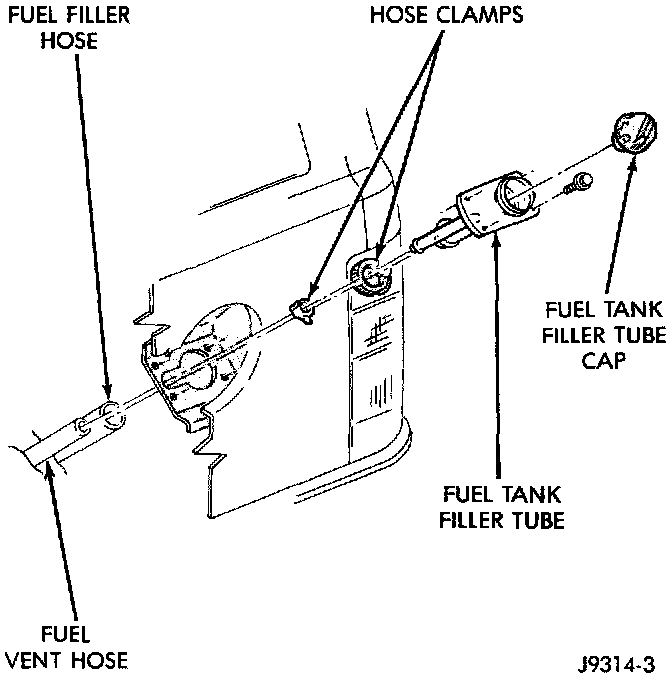
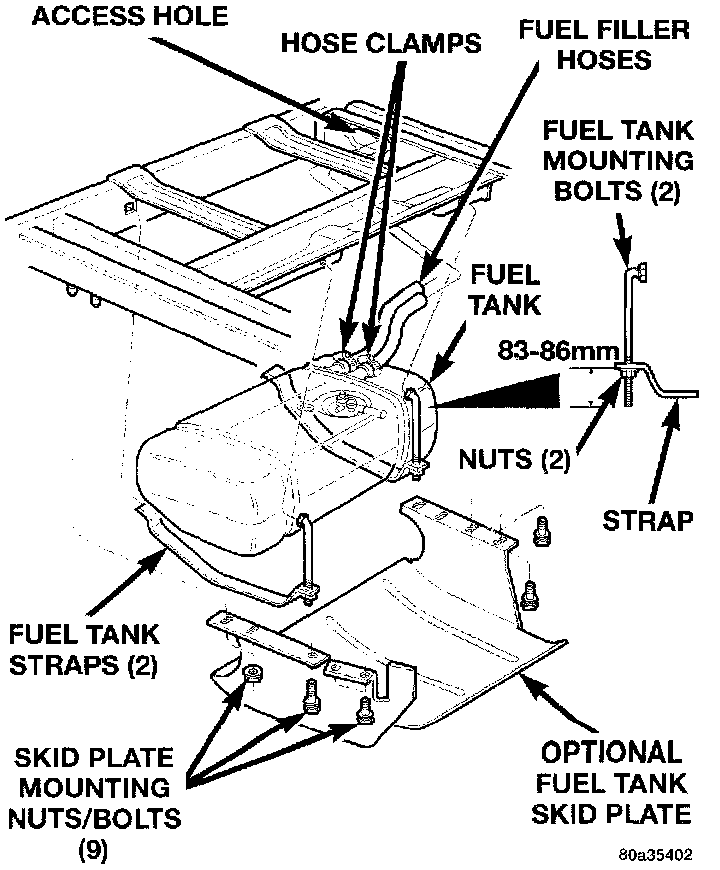
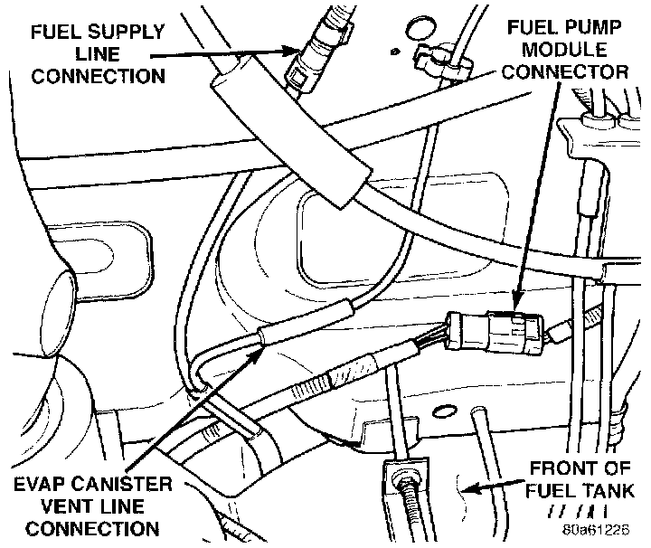
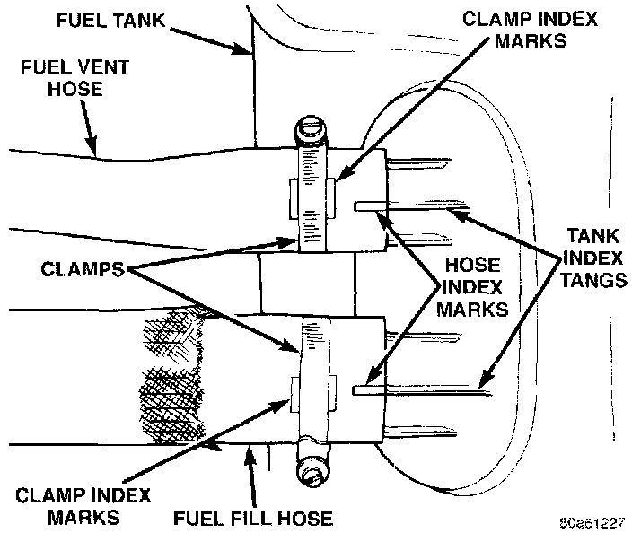

Fuel Tank Draining and Removal/Installation
FUEL TANK DRAINING AND REMOVAL/INSTALLATION PROCEDURE
WARNING: The fuel system is under constant fuel pressure even with the engine off. This pressure must be released before servicing fuel tank.
The electric fuel pump may be activated allowing fuel tank to be drained. This is done at fuel rail connection using DRB scan tool. Before disconnecting fuel line at fuel rail, release fuel pressure. Attach end of special test hose tool number 6541, 6539, 6631 or 6923 at fuel rail disconnection (tool number will depend on model and/or engine application). Position opposite end of this hose tool to an approved gasoline draining station. Activate fuel pump and drain tank until empty. If electric fuel pump is not operating, tank will have to be lowered for fuel draining. Refer to following procedures.
REMOVAL
1. Disconnect negative battery cable at battery.
2. Release fuel system pressure. Service and Repair
3. Raise and support vehicle.
Fig. 36 Fuel Tank Filler Tube:

4. Remove fuel tank fill hose and vent hose clamps at fuel tank filler tube (Fig. 36). Remove both hoses at fuel filler tube.
5. Remove rear tow hooks (if equipped).
Fig. 37 Fuel Tank Mounting:

6. Remove fuel tank skid plate mounting nuts/ bolts and remove skid plate (Fig. 37) (if equipped).
7. Remove optional trailer hitch (if equipped).
8. Remove exhaust tailpipe heat shield mounting bolts and remove shield.
CAUTION: To protect fuel tank from exhaust heat, this shield must reinstalled after tank installation.
9. Place a hydraulic jack to bottom of fuel tank.
WARNING: Place a shop towel around fuel lines to catch any excess fuel.
Fig. 38 Connections At Front Of Fuel Tank:

10. Disconnect fuel supply line near front of fuel tank (Fig. 38).
11. Disconnect EVAP canister vent line near front of tank (Fig. 38).
12. Disconnect fuel pump module electrical connector (pigtail harness) near front of tank (Fig. 38). Harness connector is clipped to body.
13. Remove two fuel tank strap nuts (Fig. 37). Position both tank support straps away from tank.
14. Carefully lower right side of tank while feeding both fuel hoses through access hole in body Fuel Tank Full And Not Drained Using DRB Scan Tool: To prevent fuel loss through hoses, keep left side of tank higher than right side while lowering. Do not allow hose openings to drop lower than top of tank.
15. Continue lowering tank until clear of vehicle. Place tank on floor with left side (hose side) higher than right side.
Fig. 39 Fuel Tank Inlet Hoses And Clamps:

16. Drain tank by removing fuel fill hose at tank. Fuel fill hose is largest of 2 hoses (Fig. 39). Insert the drain hose (from an approved gasoline draining station) into hose opening. Drain tank until empty.
17. If fuel pump module removal is necessary, refer to Powertrain Management/Fuel Delivery and Air Induction/Fuel Tank Unit/Fuel Tank Unit for procedures.
Service and Repair
INSTALLATION
1. If fuel pump module is being installed, refer to Fuel Pump Module Removal/Installation in this group for procedures.
2. Install fuel fill/vent hoses to tank fittings. To prevent hose from kinking, rotate each hose until index mark on hose is aligned to index tang on fuel tank (Fig. 39).
3. Install hose clamps to hoses. Position clamps between index marks on each hose (Fig. 39).
4. Position fuel tank to hydraulic jack.
5. Raise tank into position while guiding fuel fill and vent hoses into and through access hole in body.
6. Continue raising tank until positioned to body.
7. Attach two fuel tank mounting straps and mounting nuts.
CAUTION: The two mounting nuts must be tightened until 83 - 86 mm (3.27 in. - 3.39 in.) is attained between end of mounting bolt and bottom of strap. See insert (Fig. 37). Do not over tighten nuts.
8. Install both fuel hoses to fuel fill tube. Tighten both retaining clamps.
9. Connect fuel pump module pigtail harness electrical connector near front of tank.
10. Connect fuel pump module supply line near front of tank.
11. Connect EVAP hose near front of tank.
12. Install exhaust tailpipe heat shield.
13. Install fuel tank skid plate and trailer hitch (if equipped).
14. Install rear tow hooks (if equipped).
15. Lower vehicle and connect battery cable to battery.